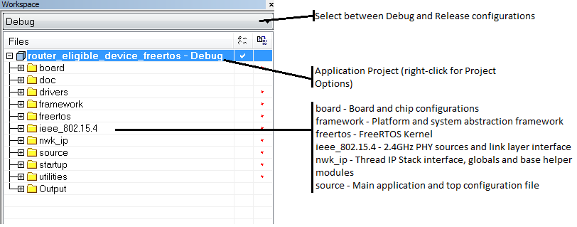
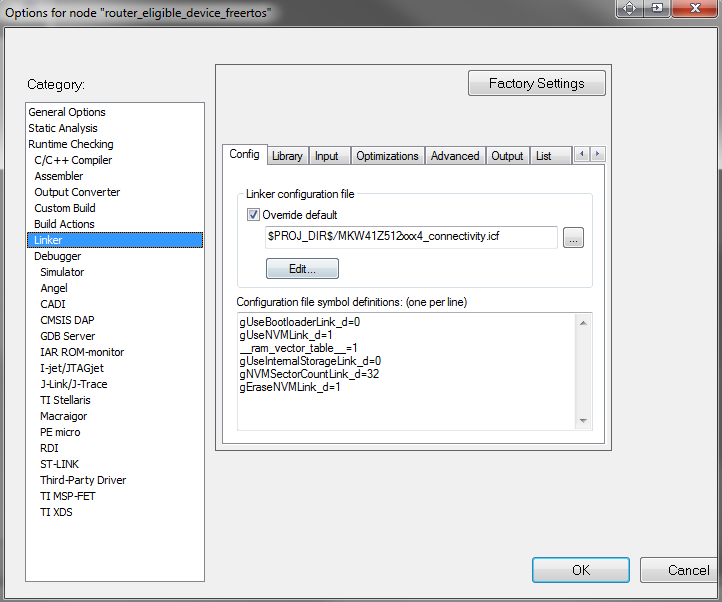

The configuration settings are primarily contained in the IAR Project Options
panel and the *.h header files contained in \middleware\wireless\nwk_ip_1.3.1\examples\common and \middleware\wireless\nwk_ip_1.3.1\examples\<application>\config file
groups within a project.
To inspect the configuration options set within the IAR Project Options panel
right-click the application project as indicated in Figure 1.
The figures below shows the global Preprocessor options. These include:
- Setting the file at
\middleware\wireless\nwk_ip_1.2.8\examples\<application>\config as
a Preinclude file which is included by default whenever a source module
compilation is invoked
- Preprocessor Defined symbols which consist in the main global settings for the system and stack for the application project
Figure 1. IAR Application Workspace

Similarly, the Linker sections contains application settings which are applied when the binary executable is created by the Linker. These include:
- Linker file to use for device memory layout of code and data
- Symbol definitions which affect whether an OTAP or Serial (FSCI) bootloader is
included in the firmware memory map, if NVM section is reserved, enables placement
of interrupts vector table in RAM memory, enables usage of internal flash for an OTA
image, configures the number of flash sectors used for NVM and enables the erase of
flash sectors used for NVM at first run.
Figure 2. EWARM Project Options Configuration – linker settings
